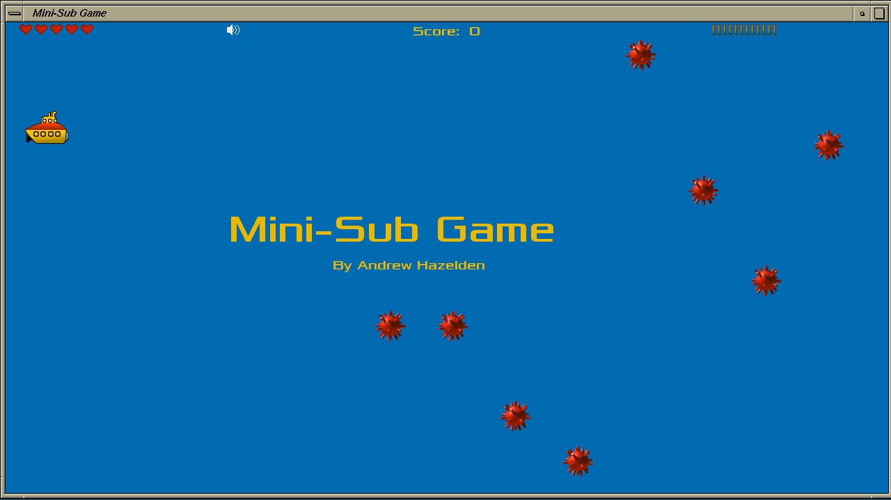
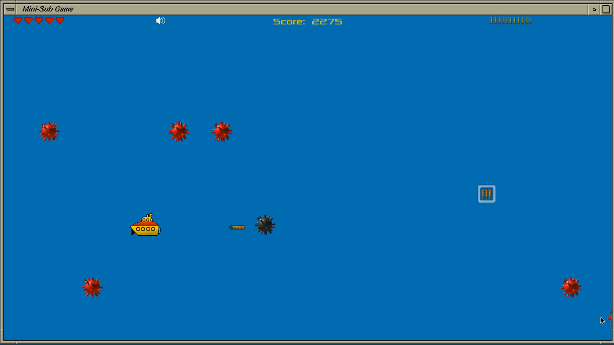

Created by Andrew Hazelden
email: andrew@andrewhazelden.com
web: www.andrewhazelden.com/blog
In the Mini-Sub game you have to navigate a dangerous ocean filled with sea mines. You can use your torpedoes to clear a path through the mine field. Along the way you can pickup extra lives and more torpedoes.
The red sea mines take 1 torpedo hit to detonate and the grey sea mines take 2 torpedo hits to detonate.
The yellow mini-sub is controlled by the cursor keys. Press the spacebar to fire a torpedo.
Press the TAB key to switch between fullscreen mode and windowed mode Press the ESC key to quit the game. Press the m key to mute the audio soundtrack.
You can change the game resolution from the command line:
To switch the display to 1024x768 in fullscreen mode:
./irix_mini-sub --window 1024 768 -fullscreen
To run the game at 1280x720 in windowed mode:
./irix_mini-sub --window 1024 768
Usage: mini-sub [options]
Options:
--window <width> <height> [-fullscreen]
Set the size of the main window


Version 1.0 Released Jan 29, 2013
This is the first version of the Mini-Sub game released for IRIX/Mac/Linux. It was created for the Winter Warmup 2013 RetroChallenge. This game is based upon the open source Mini-Sub game demo created for the Mikromedia dsPIC33 16-bit embedded computer.
The IRIX executable is called "irix_mini-sub". You need to have SDL installed for it to work on IRIX. You can download SDL, libsdl_image, libsdl_mixer, libsdl_gfx-framework, and libsdl_ttf from Nekoware.
The IRIX version of the mini-sub game can be compiled with GCC on IRIX 6.5.
To compile it on IRIX run:
cd "Mini-Sub/source_code"
make -f Makefile.irix go
Main Nekoware Page:
http://www.nekochan.net/what-is-nekowar.html
Primary Nekoware Mirror:
http://nekoware.dustytech.net/index.php?path=current/
For the Mac alpha version you need to start it from the command line so the program knows where the image resources are. If you double click on the file mac_mini-sub file you will get an error. I am working on improving my SDL image loading code to fix this issue.
To start the game enter the following at the terminal:
cd "Mini-Sub/game"
./mac_mini-sub
To compile it on Mac OS X run:
cd "Mini-Sub/source_code"
make -f Makefile.osx go
You can install the required SDL libraries using Mac Ports and xcode:
http://www.macports.org/install.php
With Mac Ports installed run the following command from the terminal:
sudo port install libsdl-framework libsdl_image-framework libsdl_mixer-framework libsdl_gfx-framework libsdl_ttf-framework
The Linux executable is called "linux_mini-sub". You need to have SDL installed for it to run on Linux.
To compile the game on Linux run:
cd "Mini-Sub/source_code"
make -f Makefile.linux go
You can use YUM to install the SDL graphics libraries with the help of the EPEL repository:
http://fedoraproject.org/wiki/EPEL
If you are running Centos 6.3 you can use this package to automatically add the EPEL repo to YUM:
http://fedora.mirror.nexicom.net/epel/6/i386/repoview/epel-release.html
With EPEL installed run the following command from the terminal:
yum install gcc SDL-devel SDL_image-devel SDL_mixer-devel SDL_gfx-devel SDL_ttf-devel
Copyright (c) 2013 Andrew Hazelden.
The Mini-Sub game is released under a Creative Commons Attribution Non-commercial Share Alike (by-nc-sa) license:
http://creativecommons.org/licenses/by-nc-sa/3.0/deed.en_US
The Mini-Sub game uses the display font "Xolonium" which is licensed under the GPL 2.0 license.
The Mini-Sub game uses the soundtrack "Gameboy" by Pavese from the album "Best of Tony-B Machine" which is licensed under the Creative Commons Attribution Non-commercial Share Alike (by-nc-sa) license:
http://creativecommons.org/licenses/by-nc-sa/3.0/